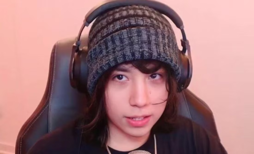
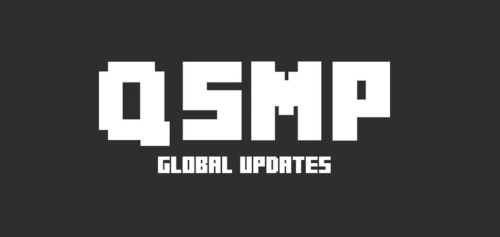
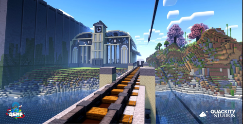

Sobre o projeto
O projeto mais novo do Quackity, o QSMP é o primeiro servidor de Minecraft multijogador multilíngue no modo sobrevivência. O servidor possui criadores de conteúdo do mundo inteiro, de diferentes linguas e culturas. Quer saber um pouco mais? acompanhe o resto desse artigo!
Quem é Quackity?
Alexis, também conhecido como Quackity (anteriormente QuackityHQ), é um YouTuber mexicano que ganhou notoriedade por criar uma ampla variedade de conteúdo. Sua biblioteca de vídeos inclue desde shows de talento realizados no Discord até incursões em servidores de jogos como Roblox, Habbo e Club Penguin. Atualmente, o foco principal de seu conteúdo está em Minecraft, especialmente em seu projeto mais significativo, chamado QSMP.
Quackity além de organizar e liderar o projeto, ele também joga constantemente no servidor.
Uma comunidade única
QSMP possui uma comunidade incrível, sendo composta por expectadores das lives feitas pelos streamers do servidor. As interações entre as pessoas de diferentes países é o ponto principal, línguas e tradições são compartilhadas, dando a oportunidade de qualquer um se aproximar de culturas diferentes e quebrar barreiras.
O objetivo do projeto era unir a comunidade mundial de minecraft, e está sendo executado de maneira exemplar. Contando com uma enorme equipe, o servidor é constantemente movimentado por acontecimentos inesperados, planos elaborados pelos jogadores, e conflitos entre os mesmos.
Com o início em março de 2023, QSMP segue até os dias atuais com conteúdos diários e momentos marcantes. Vale a pena acompanhar!
Então é isso! Espero que você tenha gostado do meu artigo introdutório sobre esse projeto gigantesco.